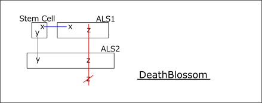
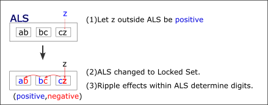
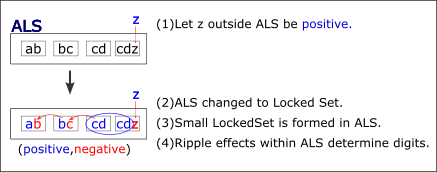

DeathBlossom...Algorithm considerations(v5)
Further developing the DeathBlossom algorithm.
This discussion assumes the following knowledge :
Link
ALS、
AIC、
ALS DeathBlossom
(1) DeathBlossom basic form
DeathBlossom uses links by ALS.。
(*) The number of ALS links equal to the number of elements in the stem cell are
arranged as shown in the following figure.
Assuming that a certain digit(z in the figure) is true,
all ALS will be changed to LockedSet and there will be no stem cell candidates.
Therefore, assuming that a certain digit(z) is true is incorrect, and z is false.

(2) DeathBlossom improvement method
How the DeathBlossom algorithm works and how to improve:
- Weak link algorithm :
ALS links are weak links. If it is a weak link, the algorithm will work. In other words, intra-cell links, inter-cell links, and AIC are also weak links; and algorithms that combine these can be constructed. It can also be extended to other weak links. - Connected links
DeathBlossom can be configured as long as it is a weak link. A weak link in this case is not limited to a single link. Same as the Force algorithm, it is also possible for weak links of connected links.
(In GNPX v5. Equipped with DeathBlossom, which includes concatenated links.) - Effect of ALS becoming LockedSet
When ALS changes by lockedSet due to digit confirmation outside ALS, elements within the ALS may become fixed.- The following effects occur:
- One element in ALS is determined.
- A LockedSet is generated from a subset of elements within the ALS.
- That determination will have a ripple effect on determining other elements.
 